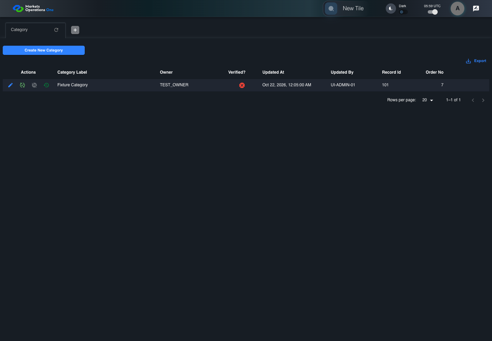
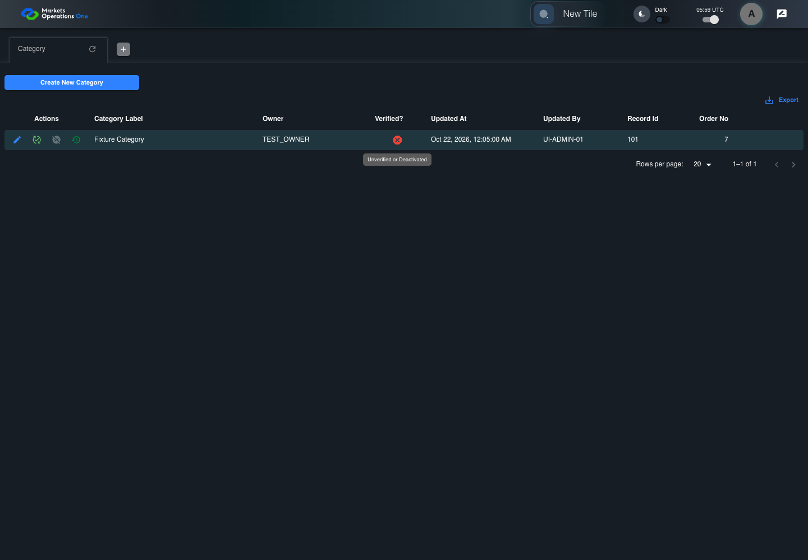

UI-ADM-CAT-011 actual administration UI with step evidence
PASS · application/run-050/ui-adm-cat-011-actual-administration-ui-with-step-evidence-215b2a46ffc5-attempt-1 · ACTUAL_APPLICATION_LOCAL_SERVICES
Actual current React administration screens. Controlled browser login supplies UI-ADMIN-01 and TEST_OWNER, or the declared SUPER_USER. Controlled BFF routes return the case-declared records. Other controlled saves persist submitted field values. This run establishes frontend handling only. It does not execute BFF validation, storage, audit generation, or authorization.
2026-10-22T05:59:11.126Z to 2026-10-22T05:59:14.441Z
Assertions and result · Artifact manifest · Exact run inputs and source hashes
Result SHA-256:2246a41e2c39d9bf74d2ecfad767c7561bd2e97ea07566ba425a4b77858db411Machine observations
- ui-origin-admin-requests.json
29634e243f9126669e33b04b16da831cdc14585936880d156607b8544dacceab
Screenshot capture: CAPTURED. Named frames: 9.
Step screenshot bindings: COMPLETE. 8/8 canonical steps have execution screenshots.
Bindings measure structural coverage only. They do not establish screenshot content quality or relevance.
Screenshot content review: NOT_REVIEWED. Recorded context: 0/9 frames. Identical image bytes: 4 repeated frames. Recorded context does not establish human visual review.
Canonical step timeline
Given Admin A is authenticated as fixture UI-ADMIN-01 with the case-specific permissions
Execution: PASSED.
1. step-01 Visible state after step 1: Given Admin A is authenticated as fixture UI-ADMIN-01 with the case-specific permissions
2026-10-22T05:59:12.238Z · 1440×1000
Step: /Users/lushevol/code/github/ratan-release-impact/workbench/tasks/ui-test-coverage-20261022/test-cases.md:8000
SHA-256:be85fc0eb4cfbd70a2159640a8789a93e8c37b2baceb6f51c245ede93eba2be5And the Category admin screen is open for UI-ADMIN-01; fixture record 101 is active and has Category Label Fixture Category; its owner is TEST_OWNER; the deactivate response returns record 101 with active false
Execution: PASSED.
2. step-02 Visible state after step 2: And the Category admin screen is open for UI-ADMIN-01; fixture record 101 is active and has Category Label Fixture Category; its owner is TEST_OWNER; the deactivate response returns record 101 with active false
2026-10-22T05:59:13.122Z · 1440×1000
Step: /Users/lushevol/code/github/ratan-release-impact/workbench/tasks/ui-test-coverage-20261022/test-cases.md:8001
SHA-256:4b4f5d83dae420573798ff1cbac0e0a4cb97a9e9f25147ae30260be5a933e76eWhen Admin A clicks icon button named "Deactivate" inside row with Record Id "101" in the "Category" administration data grid
Execution: PASSED.
3. step-03 Visible state after step 3: When Admin A clicks icon button named "Deactivate" inside row with Record Id "101" in the "Category" administration data grid
2026-10-22T05:59:13.376Z · 1440×1000
Step: /Users/lushevol/code/github/ratan-release-impact/workbench/tasks/ui-test-coverage-20261022/test-cases.md:8002
SHA-256:81d84f78e4f9ea4c43f201ed6c07e38ea1dad5129617c793bd42aff6c9868207And Admin A clicks button named "Deactivate" inside the dialog named "deactivate ID: 101" inside the "Category" administration tabpanel
Execution: PASSED.
4. step-04 Visible state after step 4: And Admin A clicks button named "Deactivate" inside the dialog named "deactivate ID: 101" inside the "Category" administration tabpanel
2026-10-22T05:59:13.567Z · 1440×1000
Step: /Users/lushevol/code/github/ratan-release-impact/workbench/tasks/ui-test-coverage-20261022/test-cases.md:8003
SHA-256:ae3d312cbcf68b519d46517933e383af454e8c401067c252faf106ca72a0e8cfThen cell named "Verified?" inside row with Record Id "101" in the "Category" administration data grid contains the error icon with tooltip "Unverified or Deactivated"
Execution: PASSED.
5. step-05 Visible state after step 5: Then cell named "Verified?" inside row with Record Id "101" in the "Category" administration data grid contains the error icon with tooltip "Unverified or Deactivated"
2026-10-22T05:59:13.899Z · 1440×1000
Step: /Users/lushevol/code/github/ratan-release-impact/workbench/tasks/ui-test-coverage-20261022/test-cases.md:8004
SHA-256:ef86d135c90eed0130828bcea4d013ccb4e88cde8a6faba6aa0c030a51d5b280And icon button named "Verify" inside row with Record Id "101" in the "Category" administration data grid is enabled
Execution: PASSED.
6. step-06 Visible state after step 6: And icon button named "Verify" inside row with Record Id "101" in the "Category" administration data grid is enabled
2026-10-22T05:59:13.978Z · 1440×1000
Step: /Users/lushevol/code/github/ratan-release-impact/workbench/tasks/ui-test-coverage-20261022/test-cases.md:8005
SHA-256:ef86d135c90eed0130828bcea4d013ccb4e88cde8a6faba6aa0c030a51d5b280Image bytes match frame 5. An unchanged image can be valid for consecutive assertions. This match does not establish correct step content.
And icon button named "Deactivate" inside row with Record Id "101" in the "Category" administration data grid is disabled
Execution: PASSED.
7. step-07 Visible state after step 7: And icon button named "Deactivate" inside row with Record Id "101" in the "Category" administration data grid is disabled
2026-10-22T05:59:14.064Z · 1440×1000
Step: /Users/lushevol/code/github/ratan-release-impact/workbench/tasks/ui-test-coverage-20261022/test-cases.md:8006
SHA-256:ef86d135c90eed0130828bcea4d013ccb4e88cde8a6faba6aa0c030a51d5b280Image bytes match frame 6. An unchanged image can be valid for consecutive assertions. This match does not establish correct step content.
And dialog named "deactivate ID: 101" inside the "Category" administration tabpanel is absent
Execution: PASSED.
8. step-08 Visible state after step 8: And dialog named "deactivate ID: 101" inside the "Category" administration tabpanel is absent
2026-10-22T05:59:14.114Z · 1440×1000
Step: /Users/lushevol/code/github/ratan-release-impact/workbench/tasks/ui-test-coverage-20261022/test-cases.md:8007
SHA-256:ef86d135c90eed0130828bcea4d013ccb4e88cde8a6faba6aa0c030a51d5b280Image bytes match frame 7. An unchanged image can be valid for consecutive assertions. This match does not establish correct step content.
Additional named frames

The final visible state after the named test assertions.
2026-10-22T05:59:14.177Z · 1440×1000Step: Test source: /Users/lushevol/code/github/ratan-release-impact/workbench/e2e/audit-specs/admin-expanded.spec.ts:15
SHA-256:
ef86d135c90eed0130828bcea4d013ccb4e88cde8a6faba6aa0c030a51d5b280Image bytes match frame 8. An unchanged image can be valid for consecutive assertions. This match does not establish correct step content.
Screenshots establish visible state only. Assertions and traces support functional claims.